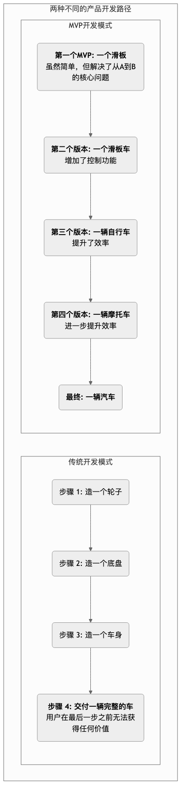

MVP (最小可行产品)¶
在充满不确定性的创业世界里，许多充满激情的团队花费了数月甚至数年的时间，倾尽所有资源，去打造一个他们心目中功能强大、设计完美的“终极产品”。然而，当产品最终发布时，却常常迎来一个残酷的现实：市场根本不需要它。MVP（Minimum Viable Product，最小可行产品） 正是精益创业（The Lean Startup）理念中，为避免这种“闭门造车”式的巨大浪费而提出的核心概念。
MVP不是一个“简陋”或“半成品”的代名词。它的定义是：那个能让你用最低的成本、在最短的时间内，向市场推出并验证其核心价值主张的、功能极简的产品版本。MVP的根本目的不在于“产品本身”，而在于一个学习过程。它是一个科学实验的工具，旨在快速地将你对“用户问题”和“解决方案”的核心假设，抛向真实的市场，并以最小的代价，来换取关于“这个方向到底对不对？”的、最宝贵的认知。
MVP的核心思想¶
- 最小化（Minimum）：它只包含那些对于验证核心假设必不可少的功能，任何多余的、锦上添花的功能都应该被无情地砍掉。它追求的是“少做”，而不是“多做”。
- 可行（Viable）：尽管功能极简，但它必须是可用的、能解决用户一个核心问题的。它必须能为第一批“天使用户（Early Adopters）”提供足够的价值，让他们愿意尝试使用。
- 产品（Product）：它是一个真实的产品（或看起来像一个真实的产品），用户可以与之互动，并产生真实的行为和反馈。
MVP的精髓在于，它将传统的“构建 -> 发布 -> 学习”的漫长线性过程，转变为一个快速、敏捷的“构建 - 测量 - 学习（Build-Measure-Learn）”的反馈循环。
MVP与传统产品的开发思路对比¶
想象一下，你的目标是造一辆汽车。

如何定义和构建你的MVP¶
-
第一步：从核心问题和用户出发
不要问“我们能做什么功能？”，而要问“我们正在为谁，解决一个什么样的高频、痛点的核心问题？”。清晰地定义你的目标用户（天使用户）和他们的核心痛点。
-
第二步：绘制用户旅程并确定核心路径
描绘出用户为了解决这个问题，需要经历的关键步骤。然后，确定为了让用户能够走完这个最核心的、最有价值的路径，所必不可少的功能点有哪些。
-
第三步：无情地进行功能优先级排序
将所有想到的功能，都列出来。然后，使用优先级矩阵（如“重要性-紧急性”矩阵）或其他方法，进行残酷的排序。问自己：“如果我们去掉这个功能，用户还能否体验到产品的核心价值？”如果答案是“能”，那就果断地把它放进“未来版本”的列表里。
-
第四步：选择合适的MVP类型
MVP不一定是一个需要写代码的软件。根据你的产品类型和需要验证的假设，可以选择不同“保真度”的MVP： * 着陆页（Landing Page）MVP：创建一个简单的介绍页面，清晰地阐述你的价值主张，并放置一个“立即注册”或“了解更多”的按钮，用来测试市场对这个想法的兴趣程度。 * “绿野仙踪”MVP（Wizard of Oz MVP）：从前端看，用户以为自己正在与一个全自动的系统互动，但实际上，后台的所有工作都是由创始人手动完成的。这能以极低的成本，验证一个复杂服务的核心流程和用户需求。 * 礼宾服务”MVP（Concierge MVP）：与“绿野仙踪”类似，但你甚至不“伪装”成一个系统。你直接像一个私人管家一样，一对一地、手动地为你的第一批用户提供服务，并在这个过程中，深度地学习他们的需求和行为模式。 * 单功能MVP：只开发产品中那一个最核心、最关键的功能，并把它做到极致。
-
第五步：发布、测量与学习
尽快地将你的MVP交到第一批天使用户手中。然后，通过定性和定量的方法，密切地关注他们的行为和反馈。你需要回答的核心问题是：“我们的核心假设被验证了吗？”“用户愿意为这个解决方案付费吗？”“我们接下来应该做什么（是继续优化、转型，还是放弃）？”
经典应用案例¶
案例一：Zappos（美国最大的在线鞋店）
- 核心假设：“人们真的愿意在网上购买一双没有试穿过的鞋子吗？”
- MVP：创始人尼克·斯威姆没有一开始就建立庞大的仓库和物流系统。他去了当地的鞋店，给那里的鞋子拍了照片，然后把这些照片上传到一个简单的网站上。当有用户下单时，他就亲自去那家鞋店把鞋子买下来，然后再邮寄给用户。这个“绿野仙踪”式的MVP，以几乎为零的库存成本，成功地验证了其核心的商业假设。
案例二：Dropbox（云存储服务）
- 核心假设：“一个能在后台无缝同步文件的解决方案，对用户有巨大的吸引力。”
- MVP：开发一个真正可用的、跨平台的同步产品，在当时技术上非常复杂且耗时。于是，创始人德鲁·休斯顿制作了一个3分钟的产品演示视频。在这个视频里，他生动地展示了Dropbox将如何工作，以及它能解决用户哪些痛点。他将这个视频发布在技术爱好者社区，并附上一个简单的注册邮箱的着陆页。一夜之间，数万人的注册，强有力地证明了市场对这个解决方案的巨大需求。
案例三：Buffer（社交媒体管理工具）
- 核心假设：“人们愿意为一个能帮助他们定时发布社交媒体内容的工具付费。”
- MVP：创始人乔尔·加斯科因创建了一个极其简单的两页式着陆页。第一页解释了Buffer是什么以及它如何工作，并放置了一个“计划与定价”的按钮。当用户点击这个按钮后，会跳转到第二页，上面写着：“您好！您抓到我们了，我们还没完全准备好。请输入您的邮箱，我们上线后会立即通知您。” 通过分析点击“定价”按钮的用户数量，他验证了人们不仅对这个想法感兴趣，而且有付费的意愿。
MVP的优势与挑战¶
核心优势
- 最大化认知价值：用最小的成本，获得关于市场和用户的、最宝贵的认知，极大地降低了创业风险。
- 加速学习循环：显著缩短了从“想法”到“获得市场反馈”的时间。
- 聚焦核心价值：强迫团队聚焦于为用户解决最核心的问题，避免在不必要的功能上浪费资源。
- 更早地建立用户关系：能够更早地与天使用户建立联系，并将他们发展为产品共创的伙伴。
潜在挑战
- 对“最小”的误解：团队很容易在“最小”的定义上产生分歧。MVP不等于粗制滥造，它必须是“可行”的，能提供核心价值的。
- 来自用户的负面反馈：天使用户之外的普通用户，可能会因为MVP的功能过于简单而给出差评，这可能会对品牌造成一定的负-面影响。
- 来自完美主义的诱惑：创始人和工程师往往有将产品打磨完美的冲动，抵制住“再加一个功能就好”的诱惑，是构建MVP时最大的挑战之一。
延伸与关联¶
- 精益创业（The Lean Startup）：MVP是精益创业方法论中“构建-测量-学习”反馈循环的核心实践环节。
- 设计思维（Design Thinking）：设计思维中的“原型（Prototype）”与MVP在理念上高度相关。通常，在开发MVP之前，会先制作更低保真的原型进行内部和用户测试。
- 敏捷开发（Agile）：敏捷的迭代式开发模式，为持续地、增量地构建和迭代MVP提供了完美的工程实践支持。
来源参考：MVP的概念最早由弗兰克·罗宾逊（Frank Robinson）提出，并由史蒂夫·布兰克（Steve Blank）在其“客户开发”模型中发展。最终，由埃里克·莱斯（Eric Ries）在其全球畅销书《精益创业》（The Lean Startup）中，将其发扬光大，并使之成为现代科技创业领域的标准词汇。